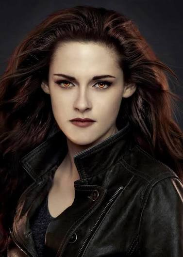
Bella Swan
Narra a maior parte da saga. Deixa Phoenix, no Arizona, para morar com o pai, Charlie, em Forks, e é a partir da chegada dela que a história acontece.
Conheça a saga que se passa na chuvosa Forks.
Crepúsculo é uma saga de romance e fantasia escrita pela norte-americana Stephenie Meyer. A história acompanha Bella Swan, uma adolescente que se muda para a pequena e chuvosa cidade de Forks, no estado de Washington, e se envolve com o misterioso Edward Cullen, um vampiro.
A autora conta que teve a ideia depois de um sonho, em 2003. O primeiro livro foi publicado em 2005, virou um sucesso mundial e deu origem a quatro livros e cinco filmes.
Além do romance, a saga fala de amor, família, lealdade e do desejo de pertencer a algum lugar.
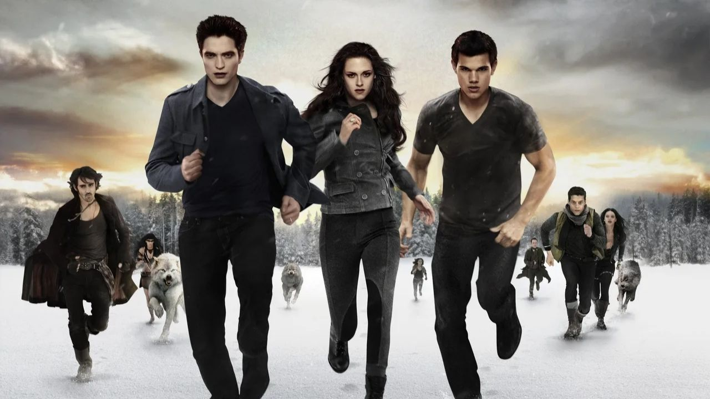
A saga tem muitos personagens. Estes são os principais e os grupos mais importantes da história.

Narra a maior parte da saga. Deixa Phoenix, no Arizona, para morar com o pai, Charlie, em Forks, e é a partir da chegada dela que a história acontece.
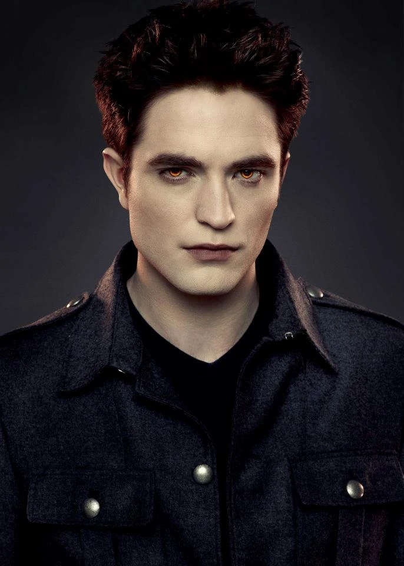
Nasceu em 1901, mas tem a aparência de um jovem de 17 anos. Vive com a família Cullen, que escolheu não se alimentar de sangue humano.
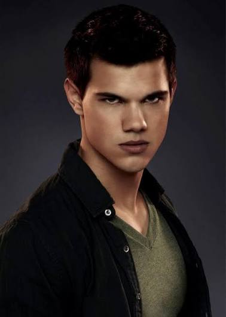
Amigo de Bella desde a infância, mora na reserva de La Push e faz parte do povo Quileute. Ao longo da história, ele se transforma em lobo.
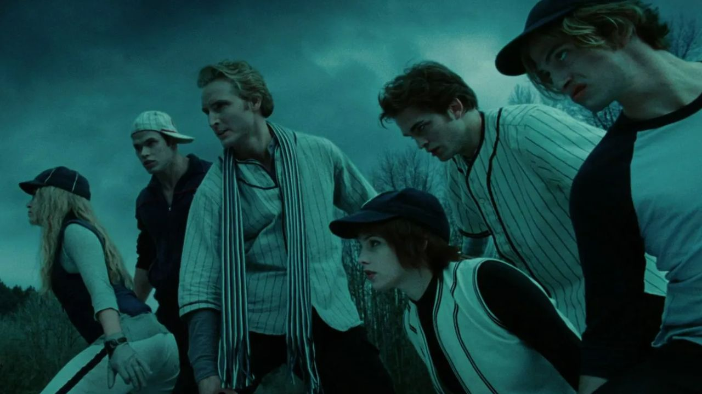
Família de vampiros formada por Carlisle, que é médico, e Esme, e pelos filhos adotivos Edward, Alice, Jasper, Emmett e Rosalie.
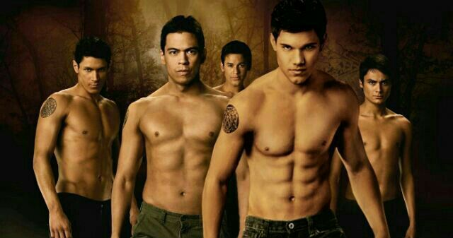
Povo que vive na reserva de La Push. Na história, alguns jovens da tribo se transformam em lobos para proteger a região.
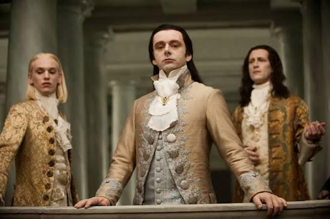
Clã poderoso de vampiros, com sede em Volterra, na Itália, que funciona como a lei no mundo dos vampiros.
Os quatro livros foram escritos por Stephenie Meyer e publicados entre 2005 e 2008.
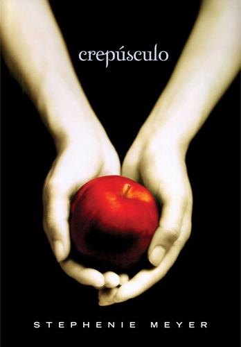
2005
Bella se muda para Forks, conhece Edward e descobre o segredo da família Cullen.
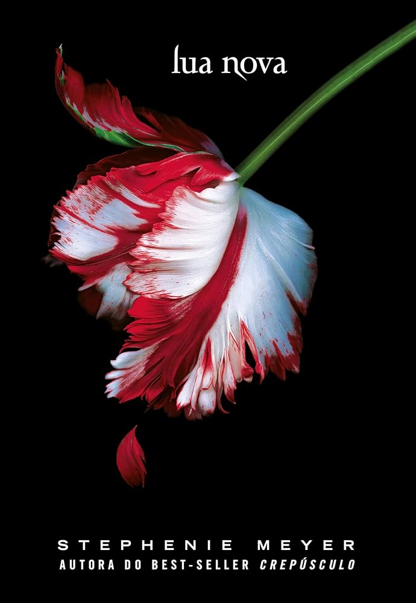
2006
Bella enfrenta uma separação dolorosa e se aproxima de Jacob.
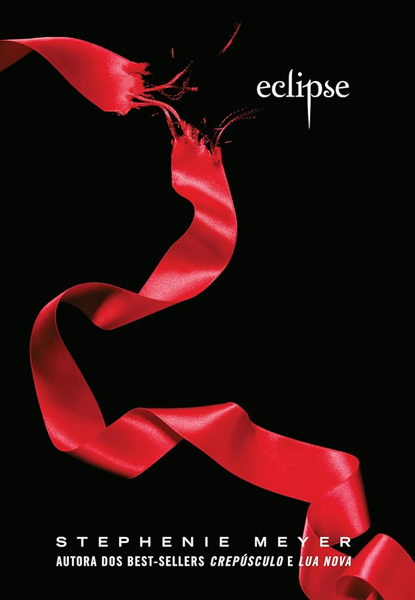
2007
O perigo cresce ao redor de Bella, que precisa tomar decisões importantes sobre o futuro.
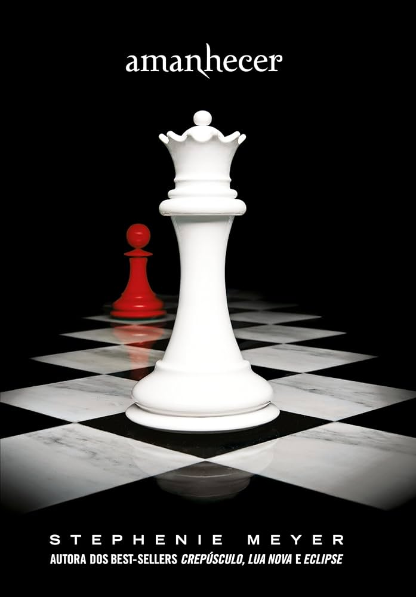
2008
Encerra a saga com uma grande mudança na vida de Bella e um encontro decisivo com os Volturi.
Os livros viraram cinco filmes, porque o último livro foi dividido em duas partes.
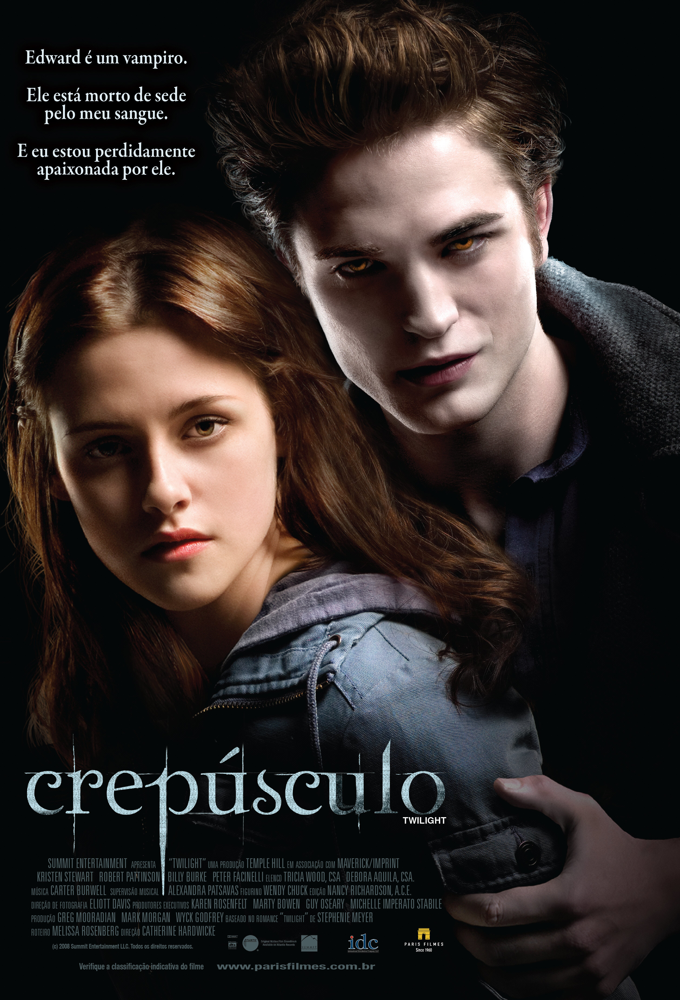
2008
Direção: Catherine Hardwicke
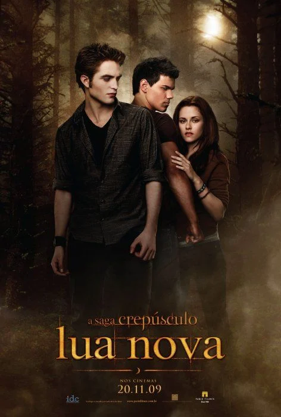
2009
Direção: Chris Weitz
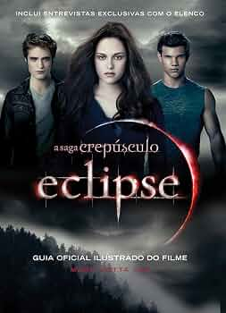
2010
Direção: David Slade
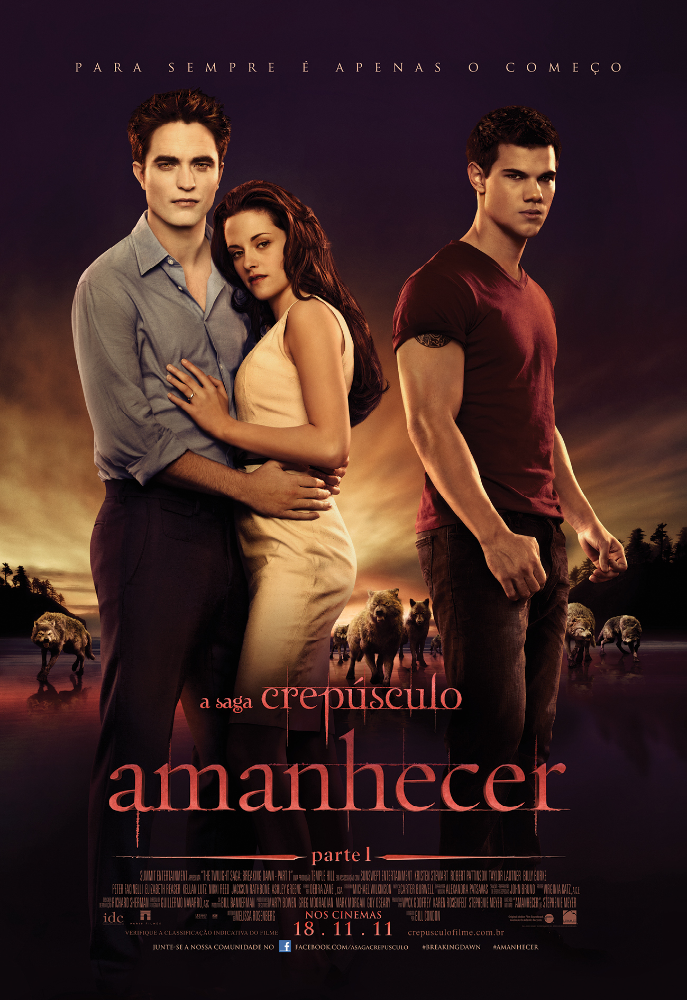
2011
Direção: Bill Condon
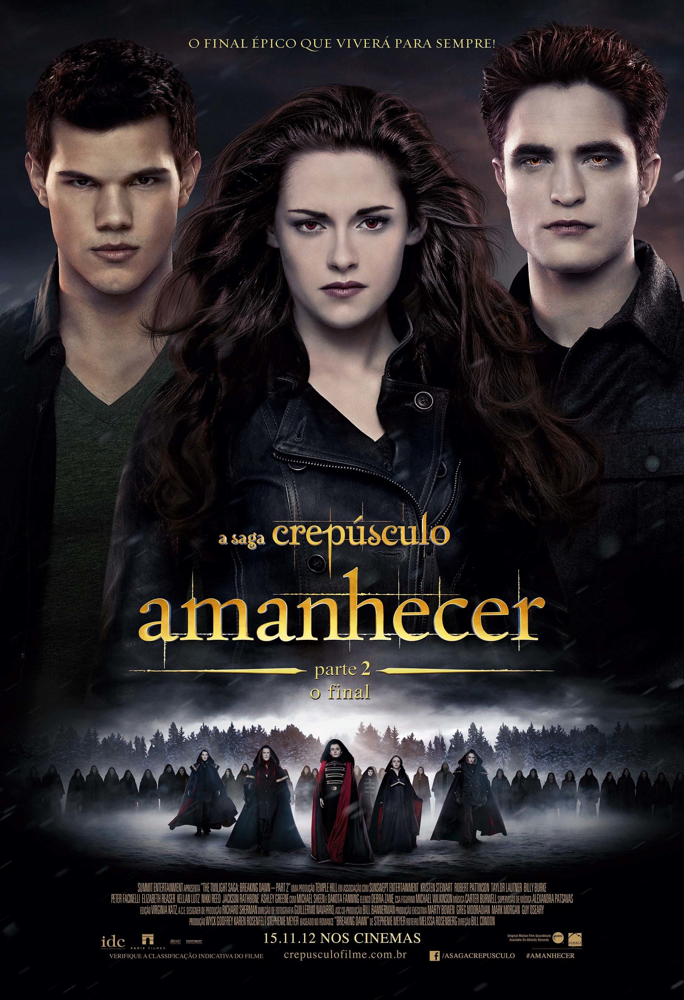
2012
Direção: Bill Condon